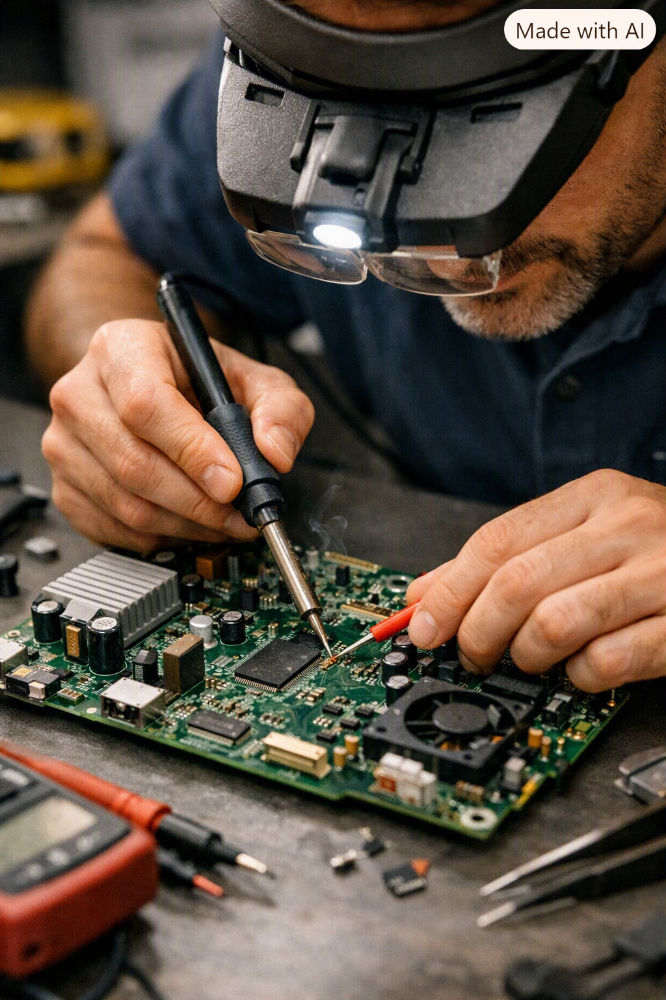
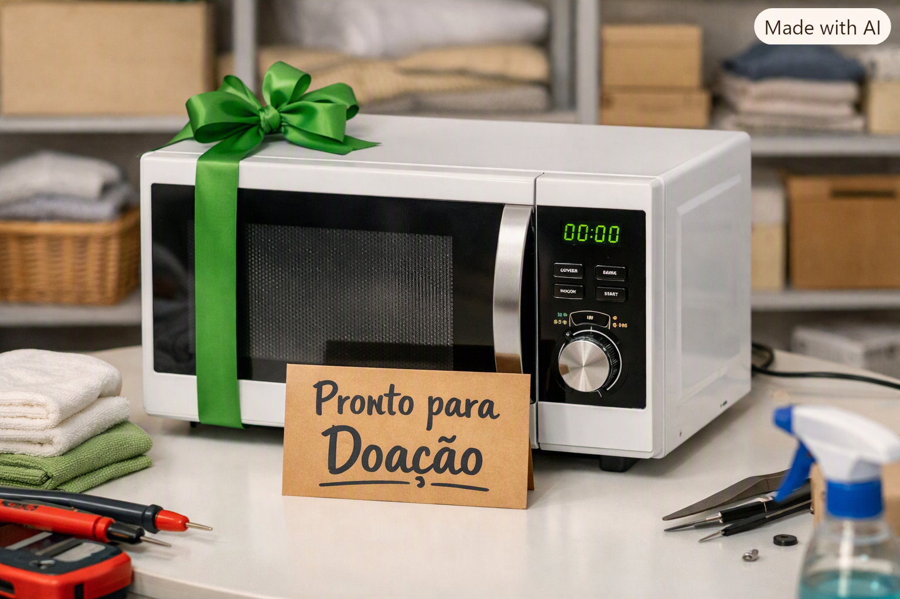

Circuito Solidário: Renovando Eletrodomésticos, Melhorando Vidas
Ação Social de Apoio Comunitário — São Carlos/SP
O Desafio
Muitas famílias em situação de vulnerabilidade social não possuem condições financeiras para consertar eletrodomésticos essenciais de uso doméstico, como geladeiras, fogões e micro-ondas, ou dependem de aparelhos antigos com fiação danificada que geram altos riscos de acidentes elétricos residenciais.
Contexto e Relevância Social
A DonTECH acredita que a tecnologia e o conhecimento técnico devem servir para proteger e estruturar as famílias da nossa comunidade. Através deste projeto de responsabilidade social, nossa assistência técnica recolhe doações de eletrodomésticos usados, realiza a manutenção completa de forma gratuita e os destina a lares fragilizados. Além disso, atuamos diretamente na conscientização de segurança elétrica doméstica e no apoio técnico para a comunidade do Portal das Primaveras, reduzindo riscos e promovendo o bem-estar social.
Nossos Objetivos
- Realizar a manutenção gratuita de eletrodomésticos essenciais para famílias de baixa renda.
- Recuperar aparelhos descartados, evitando o acúmulo de lixo eletrônico na região de São Carlos.
- Garantir que os eletrodomésticos domésticos recuperados operem com total segurança técnica.
- Oferecer orientações práticas sobre o uso seguro de energia e prevenção de curtos-circuitos.
Público-Alvo
Famílias cadastradas em programas de assistência social, moradores de bairros periféricos que necessitam de suporte para seus aparelhos de linha branca ou entidades assistenciais que utilizam equipamentos eletrônicos de cozinha.
Registro Fotográfico

Oficina DonTECH: Revisão detalhada de componentes e placas eletrônicas domésticas

Resultado final: Equipamento testado, higienizado e pronto para doação comunitária
Como Desenvolvemos (Etapas)
- Triagem e Coleta: Identificação e recebimento de aparelhos domésticos com defeito doados por clientes e parceiros.
- Bancada de Reparo: Avaliação elétrica rigorosa, troca de fiações antigas, soldagem de circuitos e substituição de peças avariadas.
- Entrega e Orientação: Destinação dos aparelhos recuperados para as famílias e explicação sobre o uso seguro dos equipamentos.
Resultados Esperados & ODS Vinculadas
Com essa iniciativa, nossa meta é garantir segurança elétrica e dignidade nos lares, diminuindo acidentes domésticos e apoiando a economia circular. O projeto caminha lado a lado com as diretrizes globais da ONU:
- ODS 1 (Erradicação da Pobreza): Diminuir o impacto financeiro de famílias vulneráveis através da oferta gratuita de serviços técnicos e doações de bens duráveis essenciais.
- ODS 12 (Consumo e Produção Responsáveis): Estimular a reutilização de eletroeletrônicos e o descarte correto de componentes químicos ou metálicos na bancada técnica.